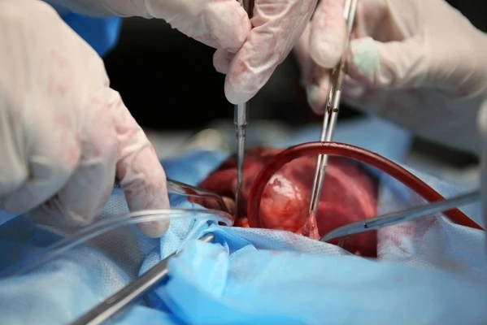
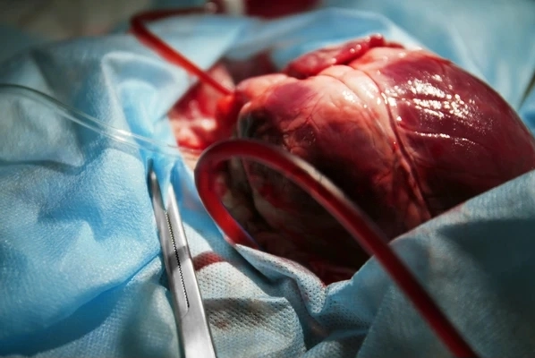
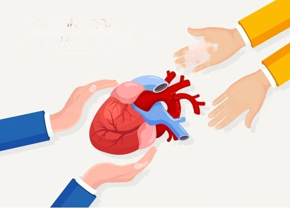
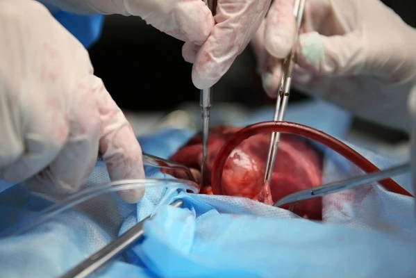
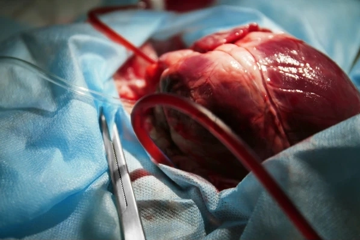
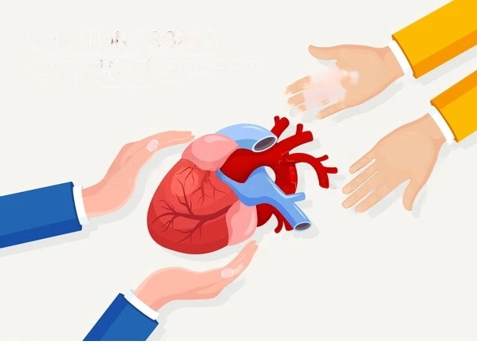

There are many types of cancer treatment. The types of treatment that you have will depend on the type of cancer you have and how advanced it is. Some people with cancer will have only one treatment. But most people have a combination of treatments, such as surgery with chemotherapy and/or radiation therapy. You may also have immunotherapy, targeted therapy, or hormone therapy.
Clinical trials might also be an option for you. Clinical trials are research studies that involve people. Understanding what they are and how they work can help you decide if taking part in a trial is a good option for you.
When you need treatment for cancer, you have a lot to learn and think about. It is normal to feel overwhelmed and confused. But, talking with your doctor and learning all you can about all your treatment options, including clinical trials, can help you make a decision you feel good about. Our Questions to Ask Your Doctor About Treatment may help.


 




